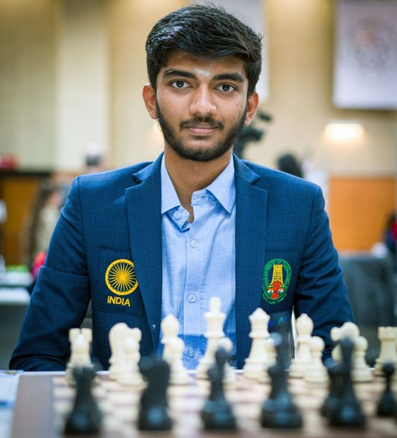
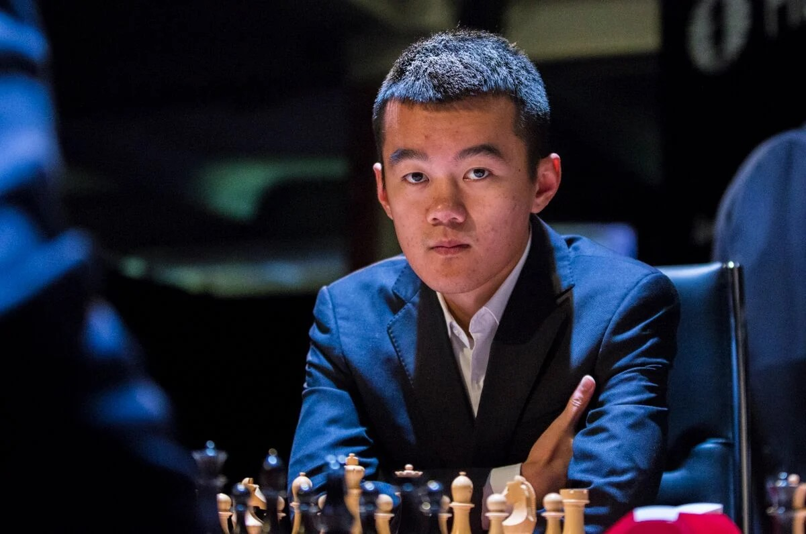

Gukesh Dommaraju
Gukesh, 29 Mayıs 2006'da Chennai'de Telugu bir ailede doğdu. Babası kulak burun boğaz cerrahı, annesi ise mikrobiyologdur. Satranç oynamayı yedi yaşında öğrenmiş ve Velammal Vidyalaya okulunda eğitimini sürdürmüştür. 2013'te daha fazla turnuvaya katılmaya başlamış ve hızlı bir şekilde yetenek göstermeye başlamıştır.
Gukesh, Nisan 2024'te FIDE Adaylar Turnuvası'na katıldı.Tek mağlubiyeti, Firouzja'ya karşı siyahla oynadığı oyundu. Bu sayede beş galibiyet, bir mağlubiyet ve sekiz beraberlik alarak9/14 puanla turnuvayı kazandı ve Ding Liren'e karşı 2024 Dünya Şampiyonası maçına çıkmaya hak kazandı.[12] Adaylar turnuvasıtarihinin en genç galibi oldu.Eylül 2024'te Gukesh, Hindistan takımının bir parçası olarak Budapeşte'deki Satranç Olimpiyatı'nakatıldı. Birinci tahtada baskın bir performans sergileyerek, oynadığı 10 karşılaşmada namağlup bir şekilde 9 puan aldı. Turnuvada büyükustalar Vignir Vatnar Stefansson, Ádám Kozák, Alexandr Predke, Aydın Süleymanlı, Wei Yi, Parham Maghsoodloo, Fabiano Caruana ve Vladimir Fedoseev'i yendi. Performans derecesi olan 3056 ile turnuvadaki tüm oyuncular arasında en yüksek dereceye sahipti.Turnuvada birinci tahtada bireysel altın madalya kazandı ve Hindistan'ın Olimpiyattaki ilk takım altın madalyasını almasına yardımcı oldu.
Ding Liren
Ding(24 Ekim 1992) Çin'in güneydoğusundaki Cıciang eyaletinin Wenzhou ilinde dünyaya gelmiştir.Ding, 4 yaşındayken annesi onu Wenzhou'daki bir satranç kulübünü götürür. Burada satrancı öğrendi ve Zhu'nun ilk antrenörü olan ve Wenzhou Satranç Federasyonu içinde şöhretli Chen Lixing ile çalışmaya başladı.Kasım 2003 ve Kasım 2004'te 10 Yaş Altı Dünya Yaş Grupları Şampiyonası ile 12 Yaş Altı Dünya Yaş Grupları Şampiyonasında birinciliği paylaştı. Her iki yarışmada da averajla (eşitlik bozma) ikinci oldu. Ding, 11 yaşındayken Çin Takımlar Şampiyonasına katılıp burada 1/4 skorla oynadı. Ertesi yıl ilk Çin Satranç Şampiyonasına katıldı ve 3,5/7 skorla oynadı. 2008 yılında bu prestijli turnuvaya bir sonraki katılımında 5,5/11 ile altıncı oldu.
2009 Çin Satranç Şampiyonası...Turnuvada 12 oyuncu vardı. 10'u büyükustaydı ve aralarındaki en yüksek reytingli üç isim şöyleydi: Ni Hua (2724), bu Xiagzhi (2704) ve Wang Hao (2696), ya 2700 eşiğine yakın ya da bu eşiği aşmışlardı. Ding, turnuvaya katılıp büyükusta unvanı olmayan iki oyuncudan birisiydi ve tüm katılımcılar içinde en düşük ikinci reytinge sahipti (2458).Ding, mucizevi bir turnuva oynadı. 11 turda yenilgisiz 8,5 puan topladı ve turnuvanın en yüksek reytingli iki oyuncusu olan Wang ve Ni'yi yendi. Ding'in turnuva performansı inanılmazdı.Bu zaferle birlikte Çin Şampiyonasını tarihte kazanan en genç isim oldu.İki yıl sonra, 2011 Çin Satranç Şampiyonasını bu kez en yakın rakibinin iki puan önünde kazandı. 2012'de bu turnuvayı tekrar kazandı. 19 yaşında, Ding üç kez ulusal şampiyon olmuştu. Bütün bu turnuvalarda yenilgisizdi.
Ding'in bu dönemdeki diğer dikkat çekici sonuçları 2012 Dünya Gençler Şampiyonasındaki üçüncülüğü ve 2015'teki başarılarıdır. 2015 Tata Steel turnuvasında 8,5/13 ile Carlsen'in arkasından ikinci sırada yer aldı. Yıldızlar dolu bu turnuvada ikinciliği Maxime Vachier-Lagrave, Anish Giri ve Wesley So ile paylaştı. 2016 Tata Steel turnuvasında yine Carlsen'in ardından ikinciliği paylaşırken bu kez kendisine Fabiano Caruana eşlik etti. 2015'in sonlarında Wang Yue'nun ardından dünya sıralamasında ilk 10'a giren tarihteki ikinci Çinli satranççı oldu.
En dikkat çekici performansı ise 2017 FIDE Dünya Kupası'ndaydı. 11sıradaki Çinli satranççı güçlü bir turnuva oynadı, 128 oyuncunun yer aldığı eleme usulü turnuvada finale kadar yükseldi. Yarı finalde ikinci sıradaki So'yu devirdi. Ding, finalde Levon Aronian ile karşılaştı ve maçın klasik bölümündeki dört beraberliğin ardından Aronian'a hızlı satranç eşitlik bozmalarında 2-0 yenilip final maçını kaybetti.
Ding, 2019'da 2019 Sinquefield Kupası'nda en etkileyici performanslarından birisini gösterdi. 12 üst düzey oyuncunun yer aldığı turnuvada 2750 elonun altında yer alan ve en düşük reytingli oyuncu Nakamura'ydı. Ding, turnuvayı yenilgisiz 6,5/11 puanla tamamladı ve turnuvadaki reyting performansı 2845'ti. Bu sonuçla Carlsen ile birinciliği paylaştı ve ikili yıldırım play-off maçı oynadılar. Ding maçtaki her iki oyunu da kazandı. Ding, Aronian'ın 2007'deki galibiyetinden beri eşitlik bozmalarda Carlsen'i yenen ilk satranççıydı.
2022'de Ding Adaylar Turnuvası'na katılma hakkını reytingle elde etti. Bu da GM Sergey Karjakin ceza aldıktan sonra minimum oyun sayısı şartını hızlıca Çin'de birkaç turnuvada üst üste oynayarak elde etti. 2020-21 Adaylar Turnuvası'nda olduğu gibi Ding, turnuvanın ilk yarısını kötü geçirdikten sonra sağlam bir sonuçla tamamladı ve GM'ler Jan-Krzysztof Duda, Richard Rapport, Caruana ve Nakamura'yı yenerek ikinci oldu. Adaylar İkincisi olsa da Ding, 2023 FIDE Dünya Şampiyonası'na Carlsen'in tahtını bırakacağını açıklamasıyla katılma fırsatı elde etti. Ding, Nepomniachtchi'ye karşı bu dünya şampiyonluğu unvan maçını kazandı ve Çin'in ilk klasik Dünya Şampiyonu oldu.